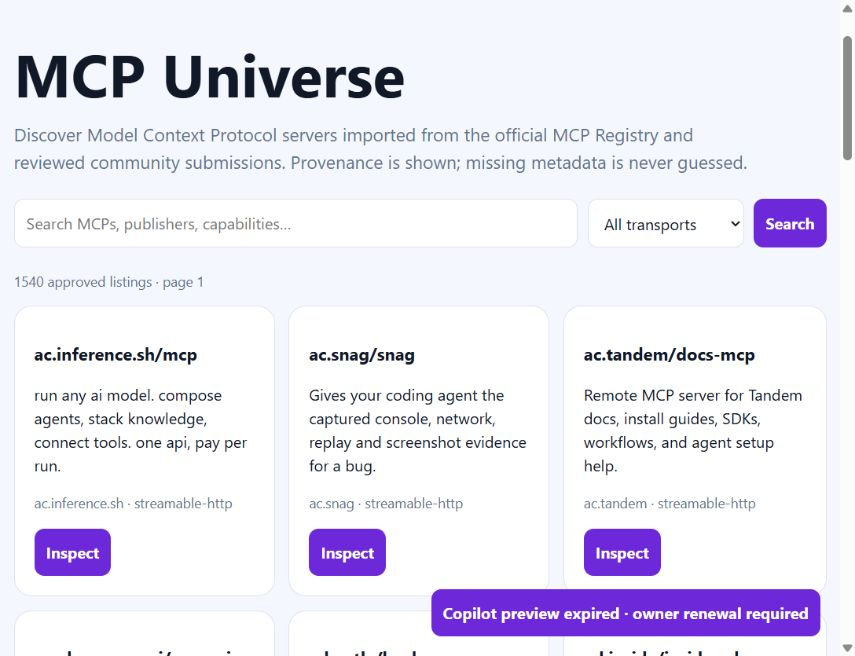
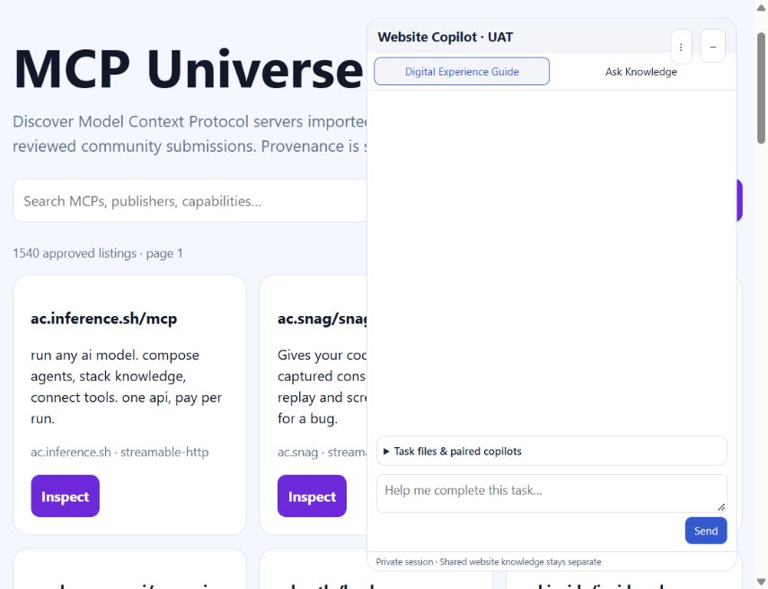

18 October 2026 · Runtime F · Source/evidence G
Active until 25 October 2026, 3:57 PM Singapore. 225/225 regression tests pass locally and in the VPS image. Three synthetic renewal CLI checks passed. Public preview remains opt-in.
Actual MCP tab initially showed Retry copilot for an expired installation. After deployment, it explicitly showed Copilot preview expired · owner renewal required. Unit checks also cover invalid expiry, origin/service scope and transient retry.
Explicit user authorization: Enable it for 7 days. Existing isolated exact-origin registration renewed for 168 hours. Public metadata expiry verified; actual MCP tab opened Website Copilot · UAT and Send was enabled. Renewal CLI isolation checks preserve permissions and reject wrong origins/excessive duration.


Same isolated flolah.cloud registration, opt-in preview only. No public form submissions, workflow/analytics permission changes or laptop exposure. Earlier UAT reports retain their original releases; this does not close remaining full-phase gates.
Results · Renewal metadata, no token · Local tests · VPS tests